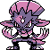
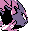

#208
Weavile
DarkIce
It moves in quick packs and marks targets with claw scratches before striking
Base stats Total 445
HP70
Attack120
Defense55
Speed125
Special75
Details
- Species
- Sharp Claw
- Height
- 3'07"
- Weight
- 75.0 lb
- Catch rate
- 45
- Base exp
- 199
- Growth
- Medium Slow
Level-up moves
LevelMoveType
StartScratchNormal
StartLeerNormal
StartQuick AttackNormal
Lv 17Sucker PunchDark
Lv 20Ice ShardIce
Lv 25SlashNormal
Lv 31CrunchDark
Lv 38AgilityPsychic
Lv 42ScreechNormal
Lv 46BlizzardIce
Lv 50X ScissorBug
Evolution
Evolves from Sneasel
Where to find
Not found in the wild — evolve, trade or catch it elsewhere.
TM / HM
TM01 Mega PunchTM03 Swords DanceTM05 Mega KickTM06 ToxicTM07 Shadow BallTM08 Body SlamTM09 Take DownTM13 Ice BeamTM14 BlizzardTM15 Hyper BeamTM16 Metal ClawTM28 DigTM32 Double TeamTM33 ReflectTM35 MetronomeTM39 SwiftTM42 Dream EaterTM44 RestTM50 SubstituteHM01 CutHM03 SurfHM04 Strength